在大鹏古城里有这样一座秘园，成为了多部电视剧的取景地
依依短租 2016-3-30
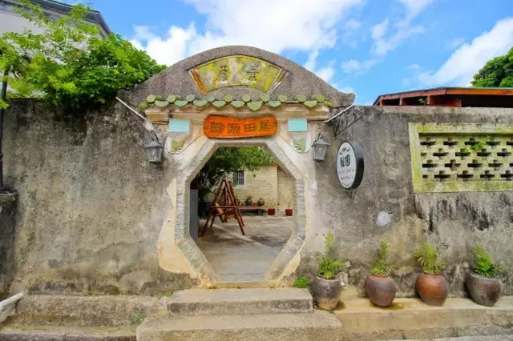
开客栈有很多的辛苦和甜蜜之处，我觉得最让我动心的就是这句话“我们的时间是属于我们自己的。”
在海边开客栈，这一切源于一场机缘巧合。
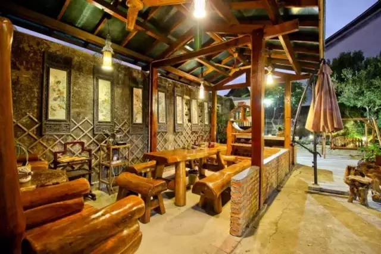
那年的夏天无意中走进了大鹏这个美丽的海湾，被眼前的民宿给吸引住，厌倦了每天朝九晚五的打卡生活，也厌倦了职场的相互算计，只想过简简单单的生活，所以毅然决然地在初到较场尾的第一天就敲定了一栋房子，和房东商榷，签约都在一天之内完成。
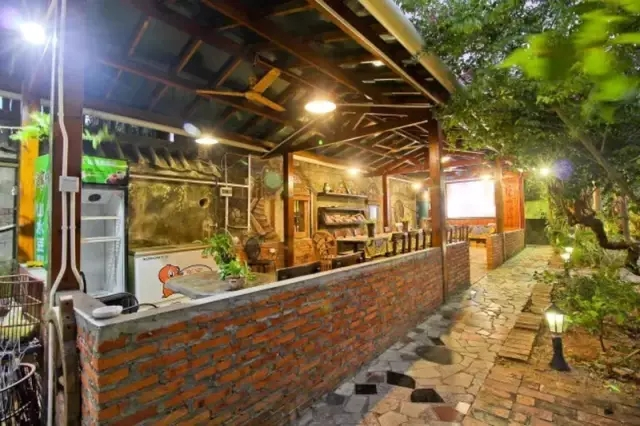
直到回到市区，还仿若做了一场梦，我们在不停的问自己，难道从此就要开始我们的创业之路了? 难道我们要在大鹏的海边开客栈了? 答案是，我们需要一次说开始就开始的创业。
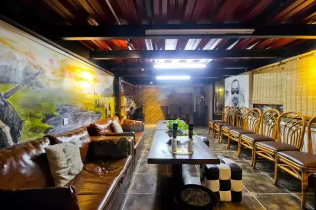
我们客栈的名字叫“秘密花园”。秘园古城客栈，茶馆就位于古城里面，从南门步行3分钟可至较场尾海滩。围合式四合院600平方公共空间。明清古城，怀古幽静，古色古香。
很多人都以为把客栈开在海边是件很悠闲惬意的事情，可以吹吹海风，听听歌曲，品一杯茶，或者饮一杯酒，安静时捧一本书读一下午，又或者邀二三知己坐上游艇出海拖网打鱼。
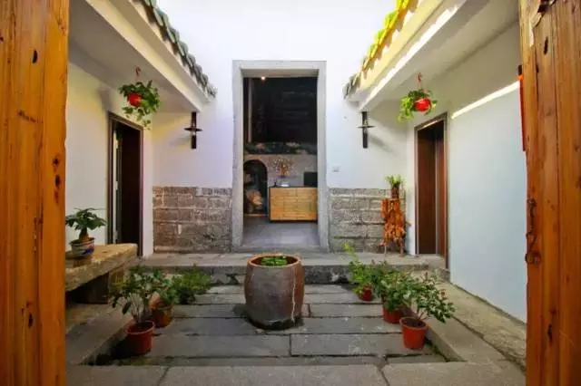
我开始的时候也是这么想的，可是我错了，而且错得很离谱。 在开客栈后半年，我的体重减了20斤。从开始筹备到装修方案敲定，材料采购，工人进场，每天从市区来回奔波140km，个中辛苦不言而喻，而这才是刚刚开始。
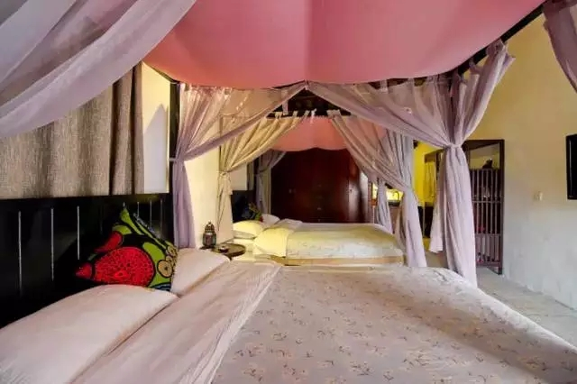
首选是客栈的定位，方案的选定。 我们的客栈是位于中国最美的“八大海岸”之一——深圳大鹏较场尾海边，离海边步行1-2分钟，小楼共四层，1楼有一个私家小花园，在选择设计方案的时候，我们也发现早期的民宿大多是依原来格局而建，要么设施简陋，就是粉刷一下墙，放置一张床；要么就是空间上尽可能的分割出最多的房间数，这样虽然在旺季客房数卖的很多，但是入住的舒适度也降低了很多。
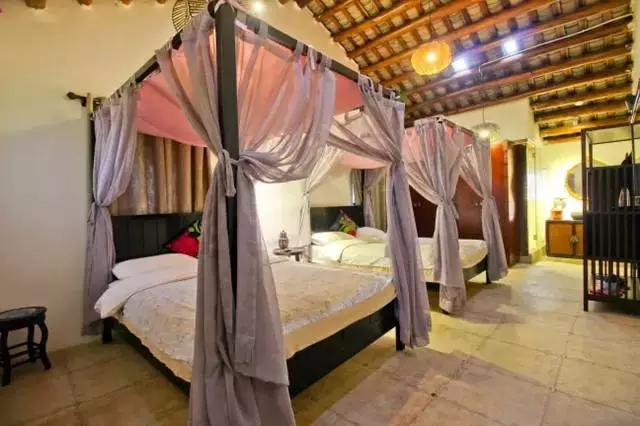
整栋小楼，我们找的设计师给出了两种方案，一种方案是整栋客栈做出13间客房，一种方案是做出7间客房。我们最终选择只做7间客房，而且1楼不做任何客房，全部作为公共活动区域。我们希望做成高品质生活的特色客栈。
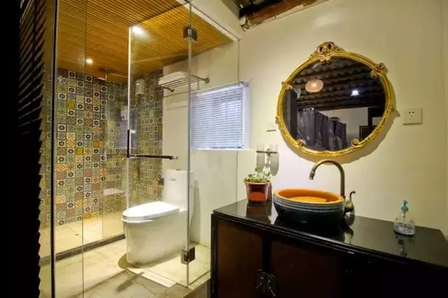
事实上证明这种选择是正确的，虽然我们在旺季的时候客房数卖不过单以房间数来运作的客栈，但是我们的口碑和客户的回头率让我们在淡季的时候入住率远高于同行。
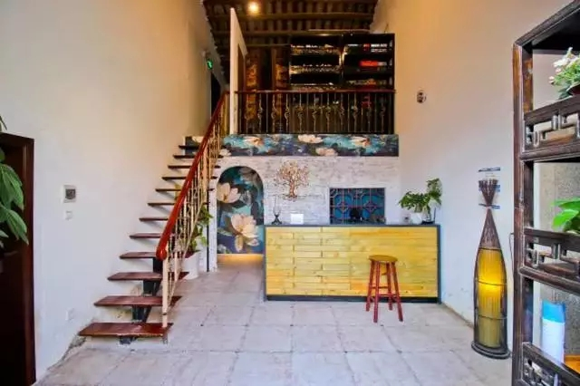
而且由于1楼为公共区域和私家小花园，设有卡拉OK欢唱区、咖啡休闲区、读书区、棋牌娱乐区，所以特别受那些包场客人的欢迎。为了提升音质，我花了好几万买了音响。一些同学聚会、家庭出游、公司聚会的包场我们接的特别多。试想一下，如果没有一个足够大的公共空间，那些住在小小房间的客人们，难道只能聚集在沙滩上聚会，那在炎炎夏天该是多么煎熬！有冷气，有音乐，有咖啡，有这么大的一个公共活动空间，我想大家都是喜欢的！

这种思路一直延续到我们开三号店，古城秘园，在秘园店公共空间的面积更是惊人，在四合院围合的客栈，我们有500多平方的庭院，里面有荔枝树，木瓜树，桂花树，桂圆树，黄皮树，有小桥流水，有单独的咖啡厅和卡拉OK厅，有超大的露台，可以远眺东山寺。小花园的朝向很好，冬天的阳光照在身上暖洋洋的。
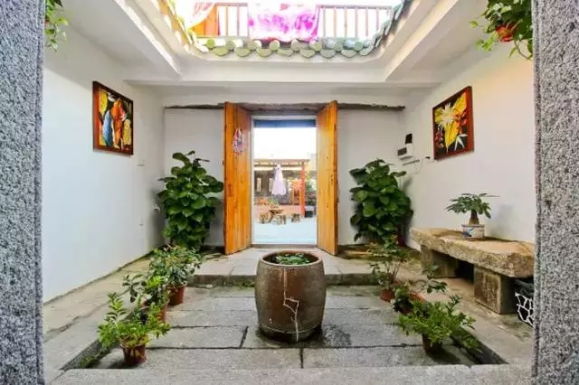
夜幕降临的秘密花园，也很温馨，门前有一棵百年的朴树，冬天叶子都掉落光秃秃的，等到了春天长满绿叶的时候，就会延伸至门前，像是在大门前盖了一把大伞！
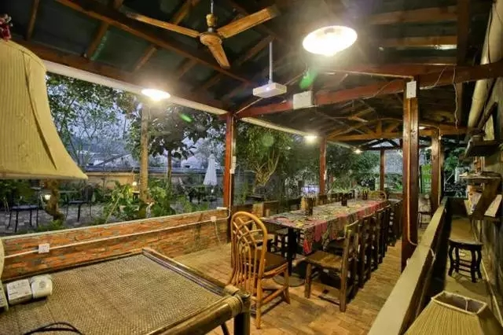
开在海边的客栈，从11月末到来年的三月是属于淡季，而对于我们而言最享受的往往却是这个时候。11月末，我一个人背着包，没有周详的计划，没有明确的目的，没有预算的限制，也没有时间的约束，只想来一场说走就走的旅行，从深圳出发，沿昆明，大理，丽江，双廊，泸沽湖，香格里拉，梅里雪山和雨崩，最后到达稻城亚丁。
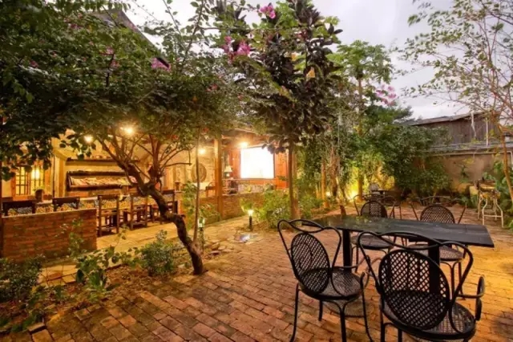
整整一个月，一路上风光无限，人文风俗也让人陶醉，同时作为客栈从业者，也一一入住体验了各地不同的民宿。既体会到了洱海边的上千元的海景房，也入住了梅里雪山飞来寺30元的床位房，在泸沽湖畔住过摩梭人开的客栈，也在稻城亚丁住过雪山下藏民的民居。单从硬件的配备来说，作为深圳后起之秀的较场尾海边民宿，其实已经远远走在了前列。
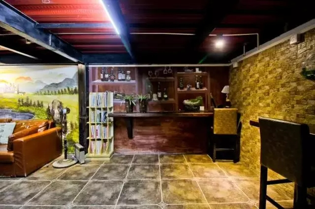
李念演的《纸婚》，小猪罗志祥演的《深圳合租记》，还有另外好几部电视剧都是在我们客栈取景拍摄的！
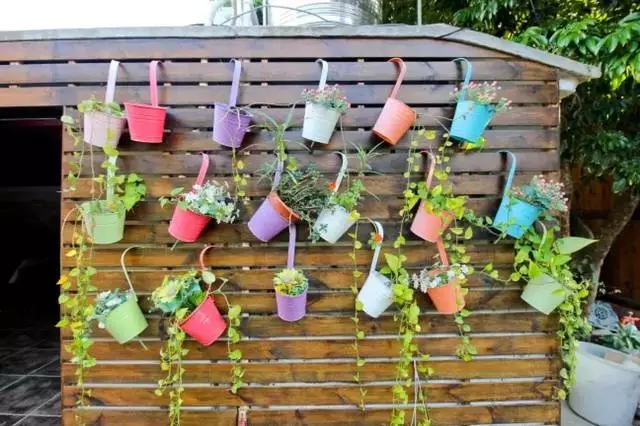
我们家附近游玩的地方也很多，比如较场尾附近有个生态园，可以去摘草莓。和一般市郊的草莓园不同，这边的生态草莓园是不打催熟药和膨大剂的。
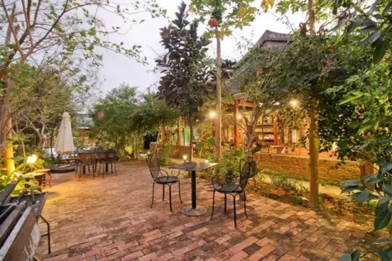
草莓园只是生态园中很小的一部分，里面的很多地方都像景区一样漂亮！等到花正艳，风拂面的时候，约上几个客栈的小朋友一起出发，步行7，8分钟就到了。
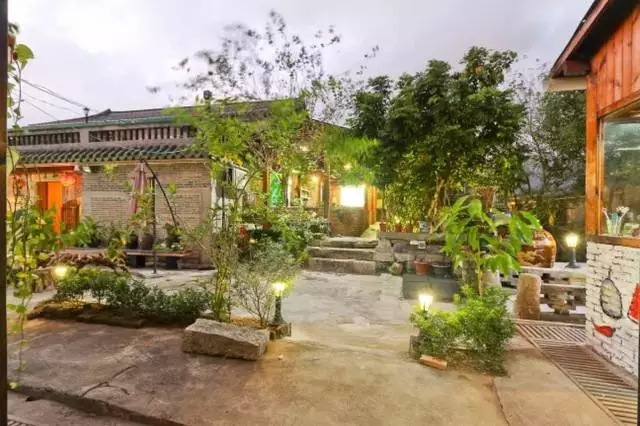
离较场尾海滩步行3分钟的距离，在深圳大鹏靠海的地方，有一处古风古韵原生态， 充满诗意的世外桃源，这就是大鹏古城，一个深圳历史起源的地方。大鹏古城又叫大鹏所城，建于明洪武年间，为深圳八景之首。整个古城民俗依旧，古城门，古民居，古街道，宏伟的将军府第、衙门、粮仓、古城、城墙等保存完好。
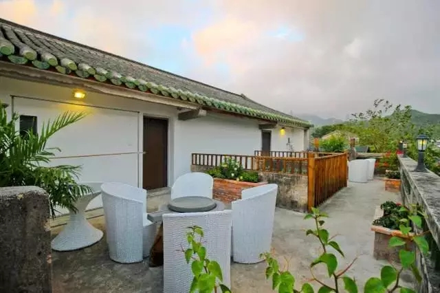
有一些穿高跟鞋走不到的路，有一些喷着香水闻不到的空气，还有一些在写字楼里永远遇不见的人。风光旖旎的大鹏湾畔，这里有银色的沙滩，蔚蓝的海面、轻淡的白云、碧绿的山峦。
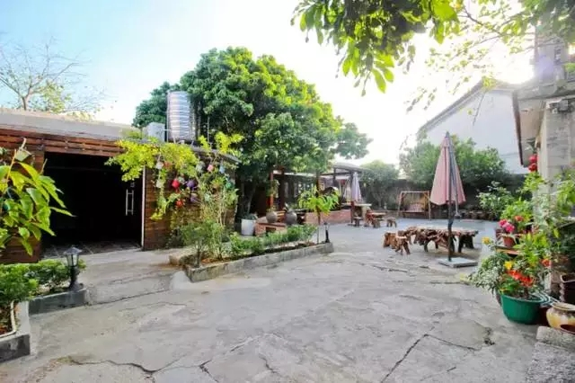
海滩、贝壳、潜水、捞鱼、帆船、摄影，久违的感觉扑面而来……KTV、烧烤、酒吧、咖啡、品茶、棋牌……一切的一切，秘密花园都将让您体验不一样的感觉……
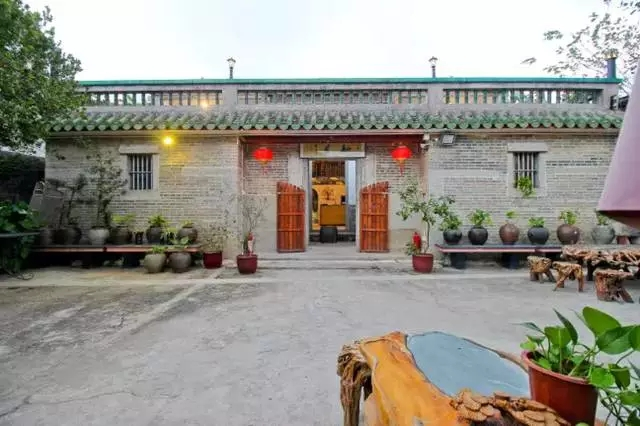